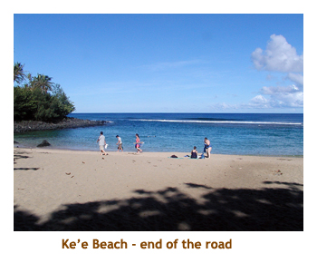
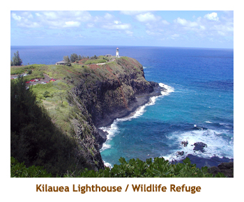
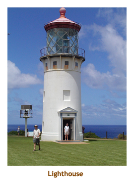
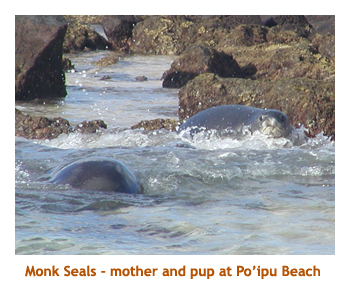

[ Home ] [ Travel ] [ Photography ] [ Pets ] [ Games] [ Rowing] [ Physics ]

A Long Awaited Return to Kaua'i
Travel
Cruises
Past Cruises (Diaries)
Future Cruises
Rogues Galleries
Land Trips
Diaries (Land Trips)
Hawai'i - Big Island - 04'01
Hawai'i - Maui - 05'02
Hawai'i - Big Island - 04'03
Hawai'i - Kaua'i - 09'04
Hawai'i - Big Island - 04'06
Hawai'i - Maui - 04'06
Mainland China - 05'07
Phoenix, Arizona - 12'07
Greek Isles - 05'08
Hawai'i - Kaua'i - 09'08
Hawai'i - Big Island - 09'09
Hawai'i - Maui - 05'12
Hawai'i - Big Island - 04'13
Ireland - 08'13
Mexico - Cancun 11'13
France/Belgium/Lux 07'15
Hawai'i - Big Island - 05'17
England / Wales - 06'17
Hawai'i - Big Island - 09'19
Photography
Cameras
Underwater
Pets
Tara
Blackie
Whitey
Muffy
Ollie
Rusty
Fluffy
Rufus&Dufus
Games
Rowing
Physics
Retracing our steps from 22 years ago, we had only the Island of Kaua'i left to revisit. We had always visited Hawai'i in April, May or June before, but this time decided to try September. (3 - 11). We wanted to visit the entire island and knew how heavy the traffic could be through the Kapa'a / Lihue area, so booked 2 nights in Princeville and 5 nights in Po'ipu Beach.
We arrived in Lihue and headded out to our hotel in Princeville. The traffic through Lihue and Kapa'a was horrendous. We finally made it to our condo at Hanalei Bay Resort - almost looking over Hanalei Bay. We checked in, did a walk around the hotel grounds and then called it a day.
The next morning we headed down to Ke'e Beach for a snorkel. It was great. We stopped along the way to overlook the large fields of taro. That afternoon we drove westward to vist the guava plantation. Very interesting. We had dinner that night in the village of Hanalei.

The following day we headed to Ha'ena Beach Park for a morning snorkel. It is a beautiful beach. After lunch we drove to the Kilauea lighthouse and bird sanctuary. The small peninsula was very windy. There were lots of sea birds on a small island and on the banks of the "mainland".

We had booked two nights at Princeville and now it was time to relocate to our condo in Po'ipu. After checking in, we headed to our favorite spot at Po'ipu Beach. The sandbar peninsula was now an island. The water was quite shallow, but the snorkeling was good. We went for dinner at the Green Garden Restaurant in Hanapepe, but it just wasn't the same as it was 22 years ago. Po'ipu had changed dramatically since we were last here in 1982. Koloa was much bigger and very busy, there were many more hotels in the Po'ipu area, and there was much more traffic.
Thenext day we headed up to Wailua to snorkel at Lidgate Park in Kapa'a. On the way we stopped at the new SPCA facility, just south of Lihue. It was a beautiful, large new building on a huge acreage of trees and flowers. What a paradise for the animals! Then it was on to the park. We hadn't been there before. The enclosed area was great for swimming, but there weren't a lot of fish there.
Finally we came to the highlight of our trip. Today we had booked a helicopter flight up the Napili Coast. I had booked with the only company that flew with the doors off! It was a 2 hour flight that included a lunch stop at a remote falls and pool. The flight left from Port Allen, not too far from Po'ipu Beach. Marjorie and I had the two rear seats and the view without the doors was fabulous. The Napili coast was very rugged - no wonder the highway couldn't pass through this terrain! The lunch stop was great, with two helicopters arriving. Some of the passengers swam in the pool. It was a clear, warm day and the view from the helicopter was fabulous. What a great day!.
The next day we drove down through Ele'ele and Hanapepe to Kekaha and headed up the Waimea Canyon. It was a bit cloudy, so the view wasn't as spectacular. Still, it is a very interesting drive and the canyon is huge. On the way back we stopped at Jo Jo's in Hanapepe for a shaved ice. It was great! We also wandered down the street and found an outlet for Aunty Lilikoi Passion Fruit Products. We bought some syrups and jams to take back as souvenirs and gifts. After we returned to our condo, we went for an afternoon snorkel at Po'ipu Beach.
The next day we drove a short distance west of Po'ipu Beach to try snorkeling at Koloa Landing. The snorkeling was pretty good, with a fair number of fish. Then we headed further along the road (the road to the blow hole) and stopped at the small beach at Ho'ai Bay. Marj didn't come in with me as she was afraid of a possible current. So, I headed out on my own. A ways out from the shore I came to a spot where many turtles were resting on the bottom. I've never seen so many at once. At any time there were two or three of them surfacing for a breath of air. It was awesome! We headed further down to the blow hole and did the souvenir booths. Then we headed back to veg out at the condo. Each evening we headed to the beach for sunset pictures. There wasn't a spectacular sunset this trip.
On our final day, our flight wasn't until the afternoon. We did a last walk down to Po'ipu Beach and were rewarded with two Monk Seals - a mother and her pup. They were frolicking in the surf and rocks just off of the beach. The parks people were there so we could not get too close. The Monk Seals are an endangered species, so it was great to see them. Afterwards we were wandering through a nearby hotel garden and came upon a juvenile Black-capped Night Heron fishing in a small lily pond.
Then it was time to head to our inter-island flight to Honolulu, and then back to Calgary. It had been a wonderful vacation. I'd love to come back to Kaua'i again.